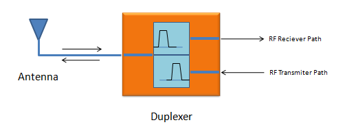
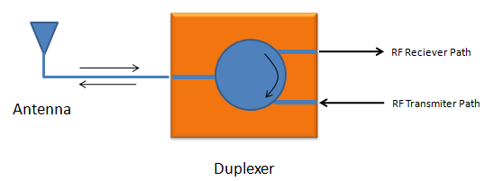
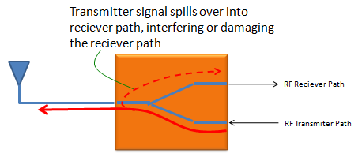
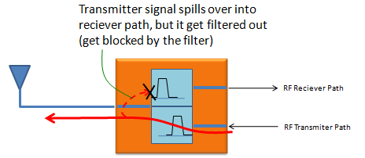
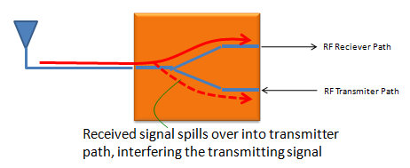
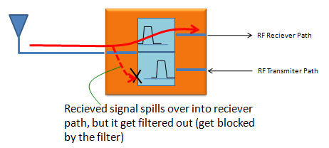
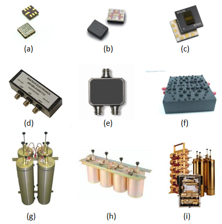
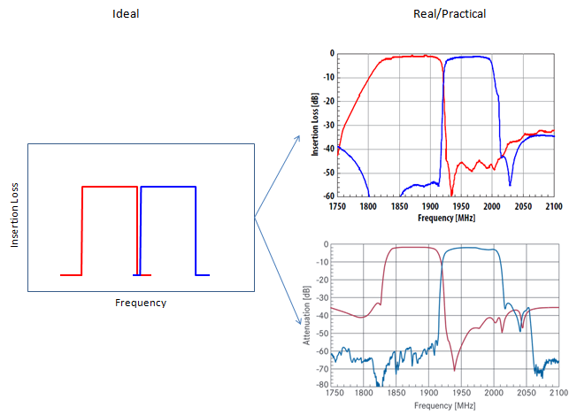

|
RF - Duplexer Home : www.sharetechnote.com |
|
Duplexer is a device which enables us to connect both Tx path and Rx path to single/common antenna without interfering each other. When the frequency of transmitter and reciever is different, it can be just a two filters combined together. One of the filter is tuned for the Reciever and the other for the Transmitter as illustrated below.

When the frequency of transmitter and reciever is same, filter method will not work. In this case, we use circulator which can pass the signal only in one direction as shown below.

Why we need a duplexer ?
The easy answer to this question may come from thinking about the case where you don't have the duplexer and both RF reciever path and Transmitter directly connected to the common (single) antenna.
Let's first think of what would happen to the transmitting signal. By design, most portions of the signal would go through the antenna but a small fractions of the signal would spill over to the reciever path. The amount of this spilled over signal would be very small but it can be pretty serious interference to the reciever path since the reciever path is designed to respond to the very low signal strength. In most wireless communication, the signal arriving at the reciever path is usually very low. So the receiver path should be designed to handle/process such a weak signal. Because of this property of reciever path, even the small signal spilled over from the transmitter can be very serious interference or it can even damage the reciever path in worst case.

However if you put a duplexer as shown below. The signal spilled over from transmitter cannot get into the reciever path because it is blocked by the filter which pass only the reciever frequency signal.

Similar logic would apply to the receiving signal as well. If there is no duplexer, a small portions of received signal may spill over into the transmitter path. Since the whole amount of received signal is very weak, it would not be likey to damage anything on the transmitter path which is normall designed to handle pretty strong signal, but it can still be a serious interferer. This interference would get even more serious if the spilled over signal gets amplified by the amplifier sitting along the transmitter path.

Again if you have a duplexer in place, the energy spilled over from reciever path cannot get into the transmitter path because it would get filtered out by the filter which passes only the frequency of the transmitting signal.

Types of Duplexers
Like filters, you would see wide varieties of Duplexers. You would see very small sized duplexer like (a), (b), (c) which are usually SAW, BAW, FBAR based if you break open a mobile device like your mobile phone which is normally handling not that high power. If you look into a system which are bigger than the mobile device and handling a relatively high power, you would see the deplexers like (d),(e),(f) which are directly designed on PCB or based on cavity filters. In some applications handling extremly high power or requires very low insertion loss, you would see those duplexers like (g),(h),(i).

Ideal vs Real Duplexers
In terms of structure, Duplexer is just a complex of two filters. So the characteristics of duplexer is based on characteristics of filters. In most of mobile communication, the gap between the transmission frequency and reciever frequency is not that wide. So one of the critical requirement of duplexer would be how sharply separate the reciever frequency and transmitter frequency sitting right next to each other. The ideal requirement is to have very sharp separation without any overlapping but in reality you cannot avoid a certain degree of overlapping.

|